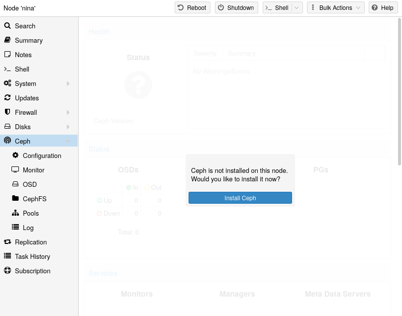
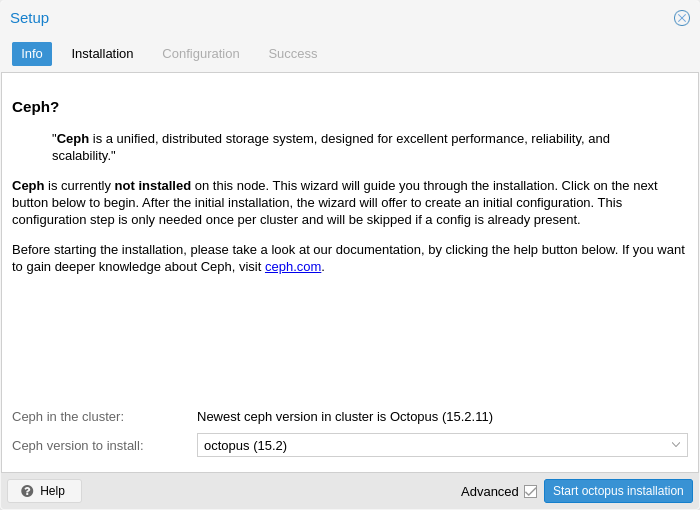
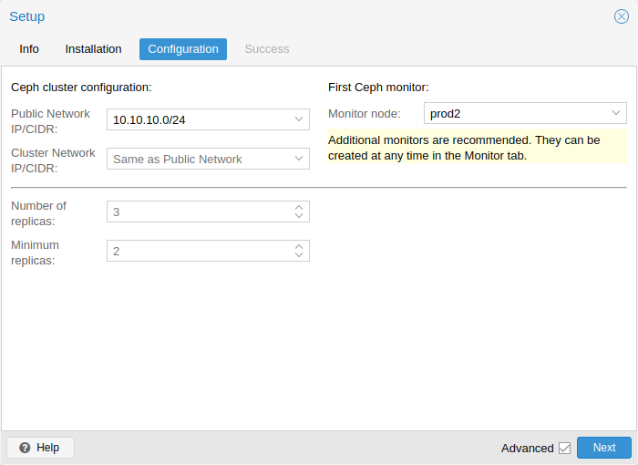

With Proxmox VE you have the benefit of an easy to use installation wizard for Ceph. Click on one of your cluster nodes and navigate to the Ceph section in the menu tree. If Ceph is not already installed, you will see a prompt offering to do so.
The wizard is divided into multiple sections, where each needs to finish successfully, in order to use Ceph.
First you need to chose which Ceph version you want to install. Prefer the one from your other nodes, or the newest if this is the first node you install Ceph.
After starting the installation, the wizard will download and install all the required packages from Proxmox VE’s Ceph repository.

After finishing the installation step, you will need to create a configuration. This step is only needed once per cluster, as this configuration is distributed automatically to all remaining cluster members through Proxmox VE’s clustered configuration file system (pmxcfs).
The configuration step includes the following settings:

You have two more options which are considered advanced and therefore should only changed if you know what you are doing.
Additionally, you need to choose your first monitor node. This step is required.
That’s it. You should now see a success page as the last step, with further instructions on how to proceed. Your system is now ready to start using Ceph. To get started, you will need to create some additional monitors, OSDs and at least one pool.
The rest of this chapter will guide you through getting the most out of your Proxmox VE based Ceph setup. This includes the aforementioned tips and more, such as CephFS, which is a helpful addition to your new Ceph cluster.
Alternatively to the the recommended Proxmox VE Ceph installation wizard available in the web interface, you can use the following CLI command on each node:
pveceph install
This sets up an apt package repository in
/etc/apt/sources.list.d/ceph.sources and installs the required software.
Use the Proxmox VE Ceph installation wizard (recommended) or run the following command on one node:
pveceph init --network 10.10.10.0/24
This creates an initial configuration at /etc/pve/ceph.conf with a
dedicated network for Ceph. This file is automatically distributed to
all Proxmox VE nodes, using pmxcfs. The command also
creates a symbolic link at /etc/ceph/ceph.conf, which points to that file.
Thus, you can simply run Ceph commands without the need to specify a
configuration file.